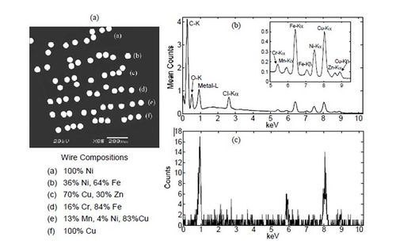
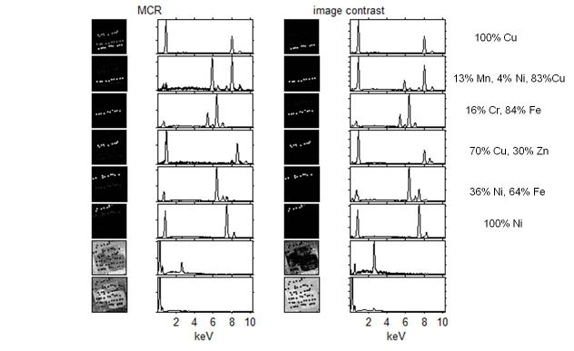

MCR Contrast Constraint
This page discusses use of the contrast constraint for Multivariate Curve Resolution (MCR) by Alternating Least Squares (ALS). More information on MCR can be found on the function pages discussing MCR and ALS as well as in the chemometrics tutorial.
Introduction
When resolving mixture data into pure component spectra and their contributions, a range of solutions are possible. In order to narrow down or eliminate some solutions, constraints are used in MCR. The requirement of positivity (non-negativity) is the most widely used constraint.
The solution obtained from MCR is also influenced by the starting estimate. For example, when samples of the expected pure components are likely present in the data set, you initialize the MCR process with the "most pure" spectra available in the data set. This is done by having the MCR option "initmode" set to 1, for rows (the default). This selects the most pure samples to initialize the algorithm. In this way, you obtain resolved spectra with a maximum contrast.
Conversely, when pure variables (variables with contributions from only one of the components in the mixtures) are likely, for example in mass spectrometry, the option "initmode" can be changed to 2 (columns), leading to selection of more pure variables as an initial guess and, thus, maximum contrast in the spectra.
The problem is that, even with the proper initialization and non-negativity constraints, the solution often does not show expected maximum contrast (in spectra or contributions). This is because there are still many possible solutions which meet the required criteria. This is often described as saying that the feasable bounds of the problem are large. The "contrast" constraint can be used to help solve this problem and provide a more desired solution.
For details on the algorithm, see the Algorithm section. Below is an example and directions for use of the constraint.
Example of Contrast Constraint
The contrast constraint can be demonstrated with energy dispersive X-ray spectrometry (EDS) of a sample described in Figure 1 (click for larger view). For complete details about the new constraint and the data analysis example shown below (fully discussed in reference (1)).
- 
- Figure 1. (a) An SEM image of the wires sample consisting of metal wires embedded in an epoxy matrix, together with the composition key. (b) The mean EDS spectrum computed from the data set. A 1024-channel spectrum was acquired each pixel in the 128-pixel x 128-pixel image (c) A single-pixel spectrum from the Cu/Mn/Ni wire.
In order to reduce to the noise and speed up calculations the data set was reduced image was calculated by averaging 3×3 block of pixels. The goal of MCR analysis is to discriminate the six alloys, which should lead to six resolved components with each a row of replicate samples. In other words, we want images (contributions with maximum contrast). Analysis of this sample with MCR with its default settings results in 8 components: in addition to the six components there are two background components, see Figure 2 (click for larger view).
- 
- Figure 2. The resolved images and spectra of regular MCR and of MCR with contribution contrast. The results are ordered to show the subsequent alloys.
Although 5 of the 6 images of the MCR results show single alloys, the first image is more complex. The highest contribution in the first image is Cu, the other two sets of replicates of alloys also contain a high amount of Cu: 83% an70%. Although this obviously reflects the proper relation between the samples it does not show the relation we want: single alloys. In order obtain maximum contrast MCR is called again with contrast option set to "a" (automatic).
As the results under image contrast show, this achieves the goal of separating the alloys. For more examples, including enhancing contrast in the resolved spectra, see reference (1).
Using Contrast in the Analysis Window
To use the contrast option in the Analysis window, switch to the MCR Constraints panel and use the Contrast Constraints setting to choose between Contributions (concentration), Spectra, or None.
Using Contrast with Command-line Functions
To use the contrast option from the Matlab command line with PLS_Toolbox, use the alsoptions.contrast option in MCR (or the contrast option in ALS)
>> options=mcr('options');
>> options.alsoptions.contrast='a';
MCR will achieve contrast in the current initmode, which is 1.
Algorithm
When maximum contrast in spectra is achieved, the angle between their vectors is maximal. So by manipulating angles, contrast can be achieved. The constraint works by adding small amounts of an average vector to either the concentrations or the spectra, depending on which mode of contrast is desired. This has the effect of pushing the opposite mode's recovered components to have as big an angle as possible (be as different as possible = high contrast).
Reference (1) gives full details of the algorithm.
- (1) W. Windig and M. R. Keenan, "Angle-Constrained Alternating Least Squares," Appl. Spectrosc. 65, 349-357 (2011).